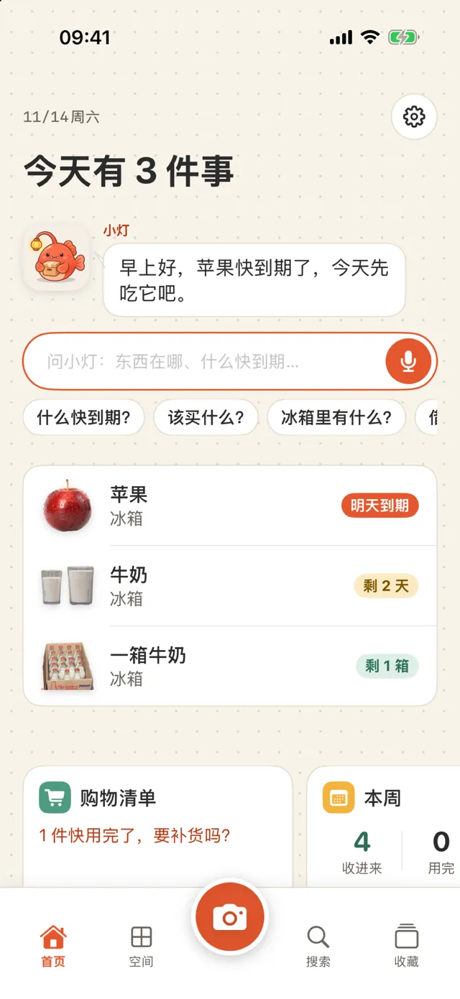
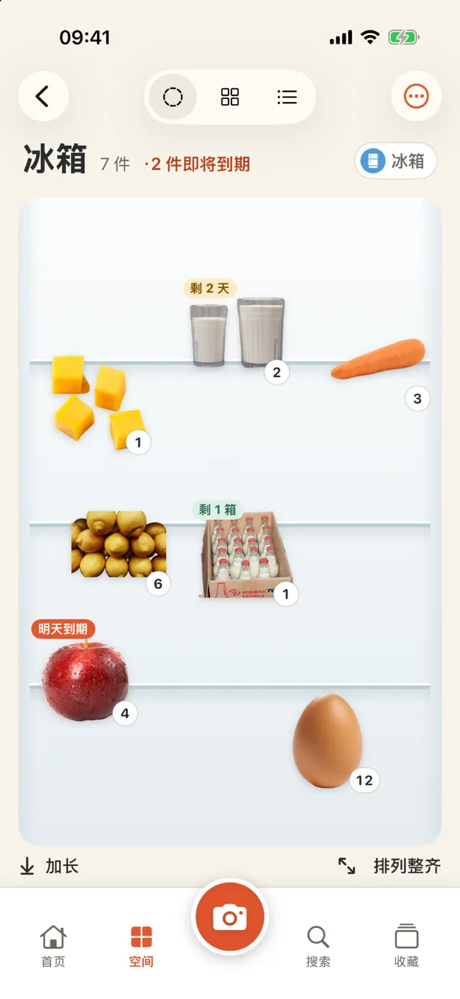
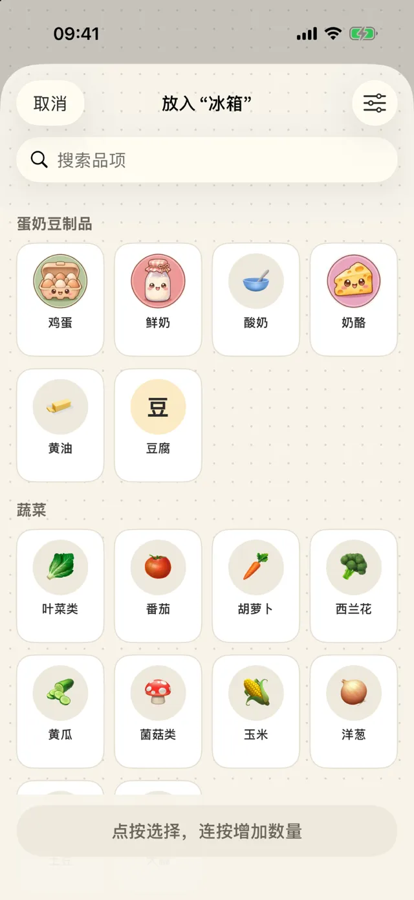
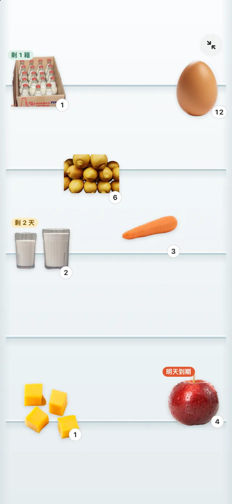
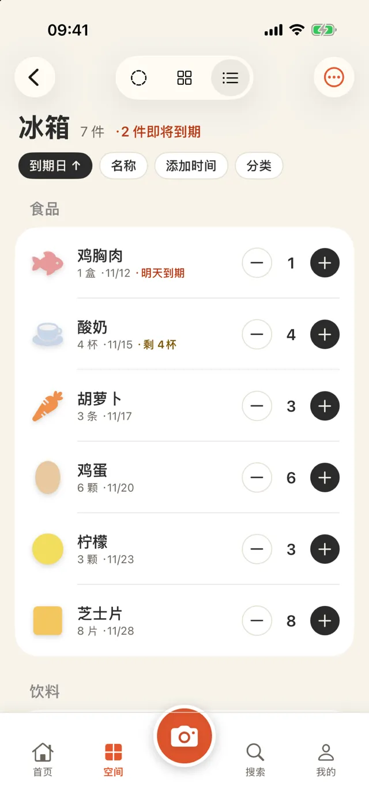
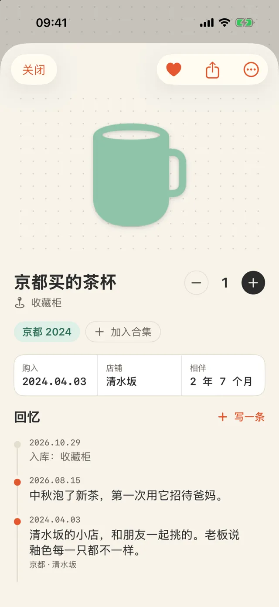
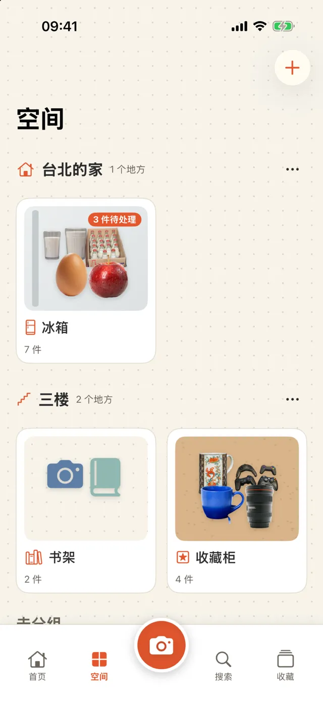
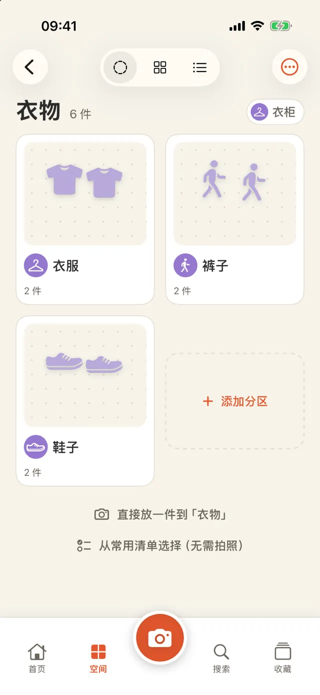
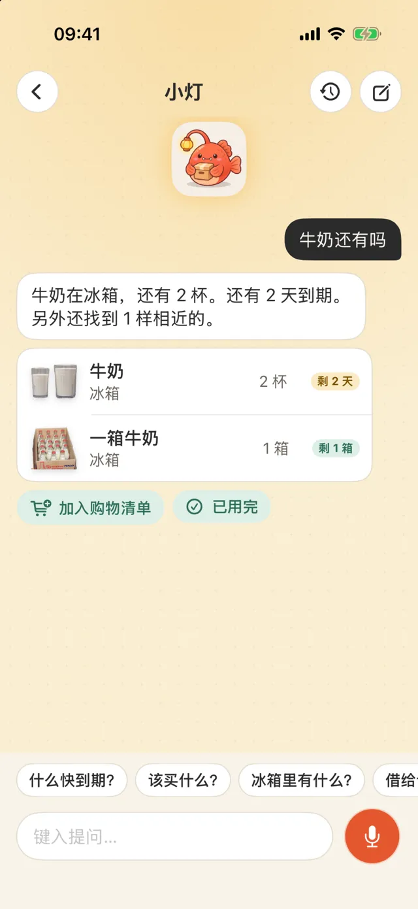
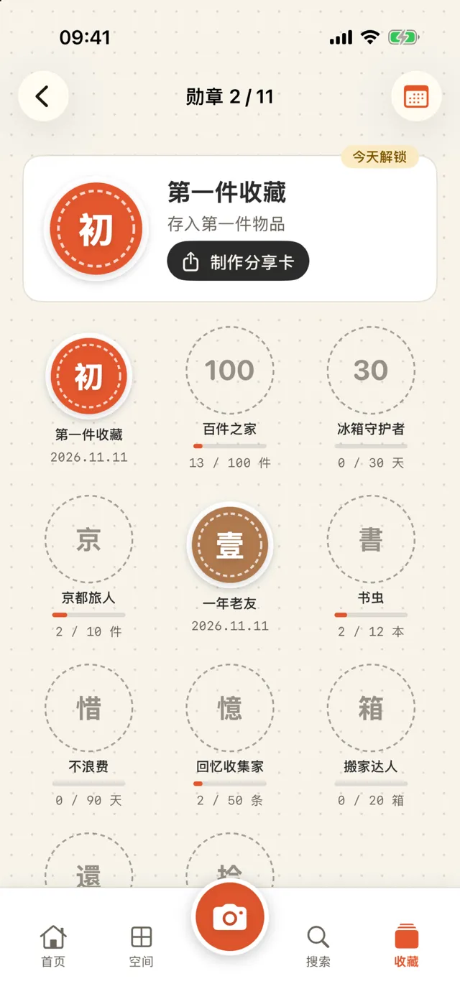

iPhone 家庭物品与纪念品记录 App
拍照，记录物品。
搜索，找到物品。
冰箱里的牛奶、储物间的纸巾、书架上的书、旅行带回的杯子，都可以拍照记录。存放位置、剩余数量和到期日保存在手机上。
在 App Store 下载- ✓ 免费下载，可免费创建 3 个位置
- ✓ 无需账号
- ✓ 数据保存在你的 iPhone 上

添加
拍张照，去掉背景后保存
对准物品按下快门，App 会自动去掉照片背景。同一个相机也能扫描条码：食品通过 Open Food Facts 查询，图书通过 Open Library 查询。购物回来后，可以用连续扫描一次记录十几件物品。

常用清单
不想拍照的，直接勾选
鸡蛋、牛奶、纸巾这类常买的东西，在“常用清单”里点一下就加进来，多点几下增加数量，到期日期按保存天数自动计算。冰箱、储物柜、药箱、衣柜各有一份清单，可以增减品项，也可以换成自己拍的照片。

切换视图
用陈列、网格或列表查看
陈列视图把物品照片摆在冰箱门、点阵纸或软木板上，你可以拖动照片并调整大小。网格适合找东西；列表适合清点，可以用加减按钮调整数量，或滑动标记物品已用完。
放大查看
整个屏幕只显示背景和照片
陈列放不下时点“加长”多一页，向下滑动即可查看。点“放大查看”会收起标题和按钮，整个屏幕都是这个空间；同样可以拖动、缩放，点一下照片查看内容。

记录到期日
拍照时读取包装上的日期
拍照时，App 会读取包装上印的到期日，由你确认后保存。到期前几天可以收到通知，提前提醒的天数由你设置。

保存纪念
记录物品背后的故事
旅行带回的杯子、朋友送的礼物，都可以添加照片、日期、地点和几句话。你也可以把它们归入“京都 2024”这样的合集。“往年今日”会让这些记录重新出现在首页。

创建位置
选择冰箱、800库、书架，或自己命名
位置模板包括冰箱、800库（一种约 80 厘米深、可走入的储物间）、柜子、书架、衣柜、收藏架、药箱和搬家纸箱。也可以自己选图标、起名字。需要时还能按住所或楼层给位置分组。

添加层级
在位置里面再建位置
“衣物”里可以再建“上衣”“裤子”和“鞋子”，外层卡片会显示里面的位置。要移动位置，可以在菜单中选择“移入…”，也可以长按卡片并拖到另一张卡片上。分类也有子分类，例如“衣物 › 裤子”，保存时会自动选择。

询问小灯
找不到时，问问小灯
在首页输入问题，或按住说话，向吉祥物小灯询问“我的护照在哪里”“还有牛奶吗”。小灯会根据记录回答存放位置、剩余数量和到期日。手机支持本机语音识别时，语音识别会在手机上完成；不开启 AI，也能按名称、分类和位置匹配查找。

看看什么时候能用
- 购物前查看冰箱里还有什么
- 做饭时先用快到期的食材
- 查找 AA 电池放在哪里
- 记下书借给了谁
- 搬家时记录每个纸箱装了什么
- 整理旅行纪念品
- 检查药箱里是否有过期物品
看 50 秒操作演示
演示切换冰箱的三种视图、调整数量、查看“衣物”里的位置、打开纪念品的回忆记录，以及询问小灯什么东西快到期。
按需使用 AI
不开启 AI 也可以使用全部功能。如果要使用，可以选择两种来源之一；开启 AI 后，除了你点按 AI 按钮时，首页每天的那段话也会请 AI 写一次。
使用 Apple 内置功能
使用 iPhone 上的 Apple Intelligence：免费、可离线使用，数据不会离开手机。需要受支持的 iPhone 和 iOS 26 或更高版本。
使用自己的 API 密钥
可选 Gemini、Claude、DeepSeek 等服务。密钥只保存在这台 iPhone 的钥匙串中，数据直接发送给你选择的服务，不经过我们。
- 识别并命名：识别照片中的物品，建议分类和计量单位
- 查看这个位置：了解冰箱里该先吃什么、储物间该补充什么、药箱里什么已过期（不提供医疗建议）
- 用一句话查找：补充同义词后搜索
- 整理回忆：把几个词整理成一段话，不添加你没说过的内容
查看徽章和分享卡片
冰箱里的物品连续 30 天没有过期，可以获得“冰箱守护者”徽章。徽章、物品故事和年度回顾可以保存为图片；默认不包含位置和价格。

查看基本信息
| 设备 | iPhone（iOS 18 或更高版本） |
|---|---|
| 语言 | English、繁體中文、简体中文、日本語、한국어、ไทย |
| 价格 | 免费下载（含横幅广告，可创建 3 个位置、查看最近 2 条与小灯的对话）；Pro 去除广告和这两项限制：每周 US$1、每月 US$3，或一次性支付 US$5 |
| 账号 | 无需账号 |
| 数据 | 仅保存在这台 iPhone 上，可导出为 CSV；删除的物品可在 30 天内恢复 |
| 网络 | 仅条码查询和你选择的 AI 服务需要使用网络 |
了解使用限制
- 暂不支持 iCloud 同步或家庭共享
- 条码数据库中没有的商品需要你自己命名；下次扫描同一条码时会使用这个名称
- 去背景效果取决于照片；处理失败时会使用原照片